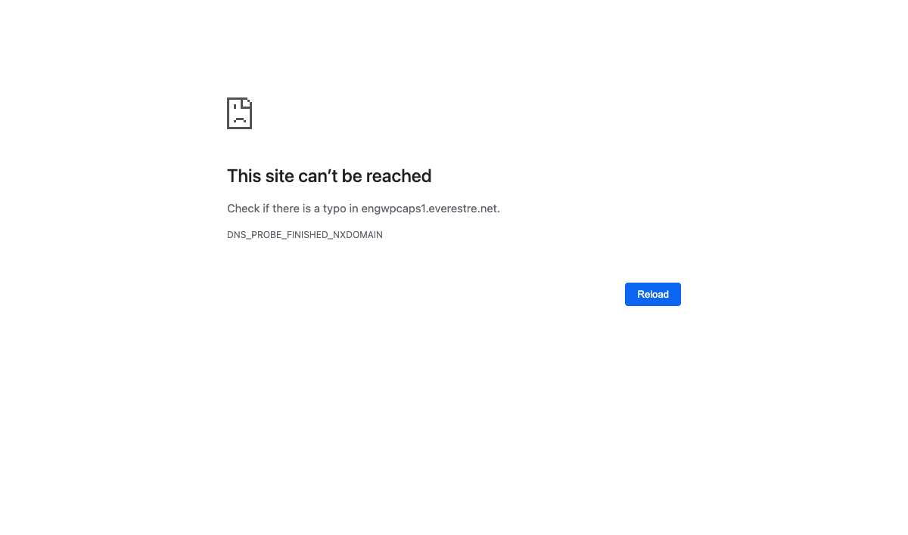

java.lang.reflect.InvocationTargetException
at java.base/jdk.internal.reflect.NativeMethodAccessorImpl.invoke0(Native Method)
at java.base/jdk.internal.reflect.NativeMethodAccessorImpl.invoke(NativeMethodAccessorImpl.java:64)
at java.base/jdk.internal.reflect.DelegatingMethodAccessorImpl.invoke(DelegatingMethodAccessorImpl.java:43)
at java.base/java.lang.reflect.Method.invoke(Method.java:564)
at org.xframium.page.factory.DefaultPageFactory.invoke(DefaultPageFactory.java:157)
at com.sun.proxy.$Proxy24.launchPage(Unknown Source)
at com.everest.page.application.spi.PageImplInvoker.launchPage(PageImplInvoker.java:129)
at test.java.com.everest.test.TestDriver_ApplicationName.TS_PcCreateAccount(TestDriver_ApplicationName.java:41)
at java.base/jdk.internal.reflect.NativeMethodAccessorImpl.invoke0(Native Method)
at java.base/jdk.internal.reflect.NativeMethodAccessorImpl.invoke(NativeMethodAccessorImpl.java:64)
at java.base/jdk.internal.reflect.DelegatingMethodAccessorImpl.invoke(DelegatingMethodAccessorImpl.java:43)
at java.base/java.lang.reflect.Method.invoke(Method.java:564)
at org.testng.internal.MethodInvocationHelper.invokeMethod(MethodInvocationHelper.java:132)
at org.testng.internal.TestInvoker.invokeMethod(TestInvoker.java:599)
at org.testng.internal.TestInvoker.invokeTestMethod(TestInvoker.java:174)
at org.testng.internal.TestMethodWithDataProviderMethodWorker.call(TestMethodWithDataProviderMethodWorker.java:77)
at org.testng.internal.TestMethodWithDataProviderMethodWorker.call(TestMethodWithDataProviderMethodWorker.java:15)
at java.base/java.util.concurrent.FutureTask.run(FutureTask.java:264)
at java.base/java.util.concurrent.Executors$RunnableAdapter.call(Executors.java:515)
at java.base/java.util.concurrent.FutureTask.run(FutureTask.java:264)
at java.base/java.util.concurrent.ThreadPoolExecutor.runWorker(ThreadPoolExecutor.java:1130)
at java.base/java.util.concurrent.ThreadPoolExecutor$Worker.run(ThreadPoolExecutor.java:630)
at java.base/java.lang.Thread.run(Thread.java:832)
Caused by: org.openqa.selenium.WebDriverException: unknown error: net::ERR_NAME_NOT_RESOLVED
(Session info: chrome=88.0.4324.192)
(Driver info: chromedriver=87.0.4280.88 (89e2380a3e36c3464b5dd1302349b1382549290d-refs/branch-heads/4280@{#1761}),platform=Mac OS X 11.0.0 x86_64) (WARNING: The server did not provide any stacktrace information)
Command duration or timeout: 446 milliseconds
Build info: version: '2.51.0', revision: '1af067d', time: '2016-02-05 19:15:17'
System info: host: 'Bonjour.local', ip: '127.0.0.1', os.name: 'Mac OS X', os.arch: 'x86_64', os.version: '10.16', java.version: '11.0.10'
Driver info: org.openqa.selenium.chrome.ChromeDriver
Capabilities [{mobileEmulationEnabled=false, timeouts={implicit=0, pageLoad=300000, script=30000}, hasTouchScreen=false, platform=MAC, acceptSslCerts=false, goog:chromeOptions={debuggerAddress=localhost:49903}, acceptInsecureCerts=false, webStorageEnabled=true, browserName=chrome, takesScreenshot=true, javascriptEnabled=true, setWindowRect=true, unexpectedAlertBehaviour=ignore, applicationCacheEnabled=false, rotatable=false, networkConnectionEnabled=false, chrome={chromedriverVersion=87.0.4280.88 (89e2380a3e36c3464b5dd1302349b1382549290d-refs/branch-heads/4280@{#1761}), userDataDir=/var/folders/z2/jrrc_j3s1n3czk214nsh64tc0000gn/T/.com.google.Chrome.abvMVH}, takesHeapSnapshot=true, pageLoadStrategy=normal, strictFileInteractability=false, databaseEnabled=false, handlesAlerts=true, version=88.0.4324.192, browserConnectionEnabled=false, proxy={}, nativeEvents=true, locationContextEnabled=true, cssSelectorsEnabled=true, webauthn:virtualAuthenticators=true}]
Session ID: 01f0c56aabe66d1a81340490dca241d1
Command duration or timeout: 1.23 seconds
Build info: version: '2.53.0', revision: '35ae25b', time: '2016-03-15 17:00:58'
System info: host: 'Bonjour.local', ip: '127.0.0.1', os.name: 'Mac OS X', os.arch: 'x86_64', os.version: '10.16', java.version: '15.0.1'
Driver info: org.openqa.selenium.remote.RemoteWebDriver
Capabilities [{mobileEmulationEnabled=false, timeouts={implicit=0, pageLoad=300000, script=30000}, hasTouchScreen=false, platform=MAC, acceptSslCerts=false, goog:chromeOptions={debuggerAddress=localhost:49903}, acceptInsecureCerts=false, webStorageEnabled=true, browserName=chrome, takesScreenshot=true, javascriptEnabled=true, setWindowRect=true, unexpectedAlertBehaviour=ignore, applicationCacheEnabled=false, rotatable=false, networkConnectionEnabled=false, chrome={chromedriverVersion=87.0.4280.88 (89e2380a3e36c3464b5dd1302349b1382549290d-refs/branch-heads/4280@{#1761}), userDataDir=/var/folders/z2/jrrc_j3s1n3czk214nsh64tc0000gn/T/.com.google.Chrome.abvMVH}, takesHeapSnapshot=true, pageLoadStrategy=normal, strictFileInteractability=false, databaseEnabled=false, handlesAlerts=true, version=88.0.4324.192, browserConnectionEnabled=false, proxy={}, nativeEvents=true, webdriver.remote.sessionid=04c7f2ec-4e3f-43f4-95a9-2bb285b88ce7, locationContextEnabled=true, cssSelectorsEnabled=true, webauthn:virtualAuthenticators=true}]
Session ID: 04c7f2ec-4e3f-43f4-95a9-2bb285b88ce7
at java.base/jdk.internal.reflect.NativeConstructorAccessorImpl.newInstance0(Native Method)
at java.base/jdk.internal.reflect.NativeConstructorAccessorImpl.newInstance(NativeConstructorAccessorImpl.java:64)
at java.base/jdk.internal.reflect.DelegatingConstructorAccessorImpl.newInstance(DelegatingConstructorAccessorImpl.java:45)
at java.base/java.lang.reflect.Constructor.newInstanceWithCaller(Constructor.java:500)
at java.base/java.lang.reflect.Constructor.newInstance(Constructor.java:481)
at org.openqa.selenium.remote.ErrorHandler.createThrowable(ErrorHandler.java:206)
at org.openqa.selenium.remote.ErrorHandler.throwIfResponseFailed(ErrorHandler.java:158)
at org.openqa.selenium.remote.RemoteWebDriver.execute(RemoteWebDriver.java:678)
at org.openqa.selenium.remote.RemoteWebDriver.get(RemoteWebDriver.java:316)
at org.openqa.selenium.remote.RemoteWebDriver$RemoteNavigation.to(RemoteWebDriver.java:969)
at com.everest.page.application.spi.LoginPageImpl.launchPage(LoginPageImpl.java:79)
... 23 more
Caused by: org.openqa.selenium.remote.ScreenshotException: Screen shot has been taken
Build info: version: '2.53.0', revision: '35ae25b', time: '2016-03-15 17:00:58'
System info: host: 'Bonjour.local', ip: '127.0.0.1', os.name: 'Mac OS X', os.arch: 'x86_64', os.version: '10.16', java.version: '15.0.1'
Driver info: driver.version: RemoteWebDriver
at org.openqa.selenium.remote.ErrorHandler.throwIfResponseFailed(ErrorHandler.java:138)
... 27 more
Caused by: org.openqa.selenium.WebDriverException: unknown error: net::ERR_NAME_NOT_RESOLVED
(Session info: chrome=88.0.4324.192)
(Driver info: chromedriver=87.0.4280.88 (89e2380a3e36c3464b5dd1302349b1382549290d-refs/branch-heads/4280@{#1761}),platform=Mac OS X 11.0.0 x86_64) (WARNING: The server did not provide any stacktrace information)
Command duration or timeout: 446 milliseconds
Build info: version: '2.51.0', revision: '1af067d', time: '2016-02-05 19:15:17'
System info: host: 'Bonjour.local', ip: '127.0.0.1', os.name: 'Mac OS X', os.arch: 'x86_64', os.version: '10.16', java.version: '11.0.10'
Driver info: org.openqa.selenium.chrome.ChromeDriver
Capabilities [{mobileEmulationEnabled=false, timeouts={implicit=0, pageLoad=300000, script=30000}, hasTouchScreen=false, platform=MAC, acceptSslCerts=false, goog:chromeOptions={debuggerAddress=localhost:49903}, acceptInsecureCerts=false, webStorageEnabled=true, browserName=chrome, takesScreenshot=true, javascriptEnabled=true, setWindowRect=true, unexpectedAlertBehaviour=ignore, applicationCacheEnabled=false, rotatable=false, networkConnectionEnabled=false, chrome={chromedriverVersion=87.0.4280.88 (89e2380a3e36c3464b5dd1302349b1382549290d-refs/branch-heads/4280@{#1761}), userDataDir=/var/folders/z2/jrrc_j3s1n3czk214nsh64tc0000gn/T/.com.google.Chrome.abvMVH}, takesHeapSnapshot=true, pageLoadStrategy=normal, strictFileInteractability=false, databaseEnabled=false, handlesAlerts=true, version=88.0.4324.192, browserConnectionEnabled=false, proxy={}, nativeEvents=true, locationContextEnabled=true, cssSelectorsEnabled=true, webauthn:virtualAuthenticators=true}]
Session ID: 01f0c56aabe66d1a81340490dca241d1
Build info: version: '2.53.0', revision: '35ae25b', time: '2016-03-15 17:00:58'
System info: host: 'Bonjour.local', ip: '127.0.0.1', os.name: 'Mac OS X', os.arch: 'x86_64', os.version: '10.16', java.version: '15.0.1'
Driver info: driver.version: EventFiringWebDriver
at jdk.internal.reflect.NativeConstructorAccessorImpl.newInstance0(Native Method)
at jdk.internal.reflect.NativeConstructorAccessorImpl.newInstance(NativeConstructorAccessorImpl.java:62)
at jdk.internal.reflect.DelegatingConstructorAccessorImpl.newInstance(DelegatingConstructorAccessorImpl.java:45)
at java.lang.reflect.Constructor.newInstance(Constructor.java:490)
at org.openqa.selenium.remote.ErrorHandler.createThrowable(ErrorHandler.java:206)
at org.openqa.selenium.remote.ErrorHandler.throwIfResponseFailed(ErrorHandler.java:158)
at org.openqa.selenium.remote.RemoteWebDriver.execute(RemoteWebDriver.java:678)
at org.openqa.selenium.remote.RemoteWebDriver.get(RemoteWebDriver.java:316)
at jdk.internal.reflect.NativeMethodAccessorImpl.invoke0(Native Method)
at jdk.internal.reflect.NativeMethodAccessorImpl.invoke(NativeMethodAccessorImpl.java:62)
at jdk.internal.reflect.DelegatingMethodAccessorImpl.invoke(DelegatingMethodAccessorImpl.java:43)
at java.lang.reflect.Method.invoke(Method.java:566)
at org.openqa.selenium.support.events.EventFiringWebDriver$2.invoke(EventFiringWebDriver.java:103)
at com.sun.proxy.$Proxy3.get(Unknown Source)
at org.openqa.selenium.support.events.EventFiringWebDriver.get(EventFiringWebDriver.java:163)
at org.openqa.selenium.remote.server.handler.ChangeUrl.call(ChangeUrl.java:40)
at org.openqa.selenium.remote.server.handler.ChangeUrl.call(ChangeUrl.java:1)
at java.util.concurrent.FutureTask.run(FutureTask.java:264)
at org.openqa.selenium.remote.server.DefaultSession$1.run(DefaultSession.java:176)
at java.util.concurrent.ThreadPoolExecutor.runWorker(ThreadPoolExecutor.java:1128)
at java.util.concurrent.ThreadPoolExecutor$Worker.run(ThreadPoolExecutor.java:628)
at java.lang.Thread.run(Thread.java:834)
| View Device State |
{kind=link}